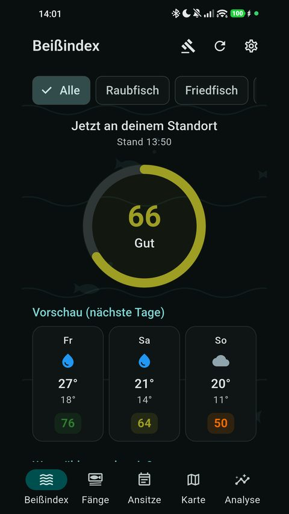
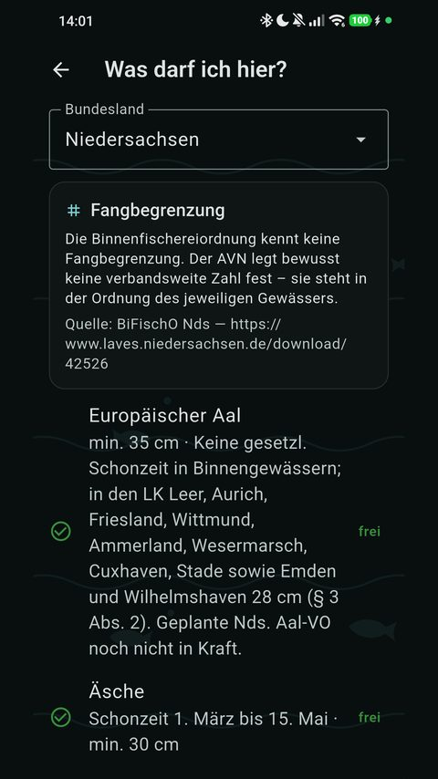
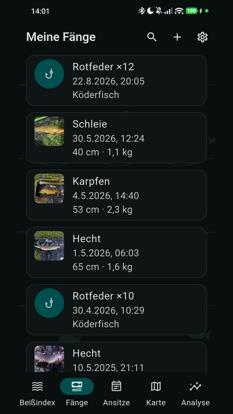
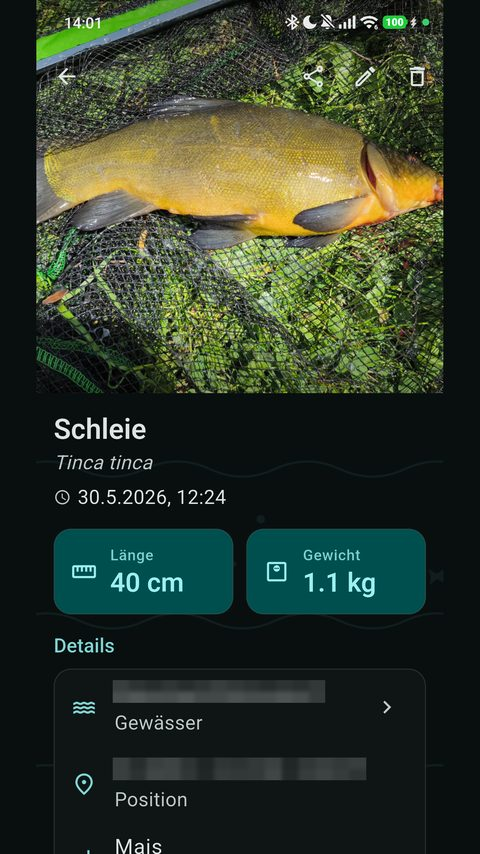
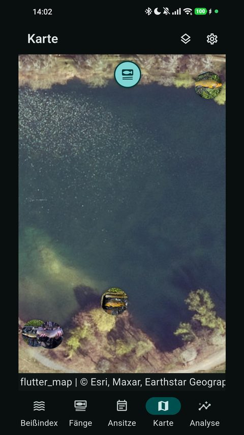
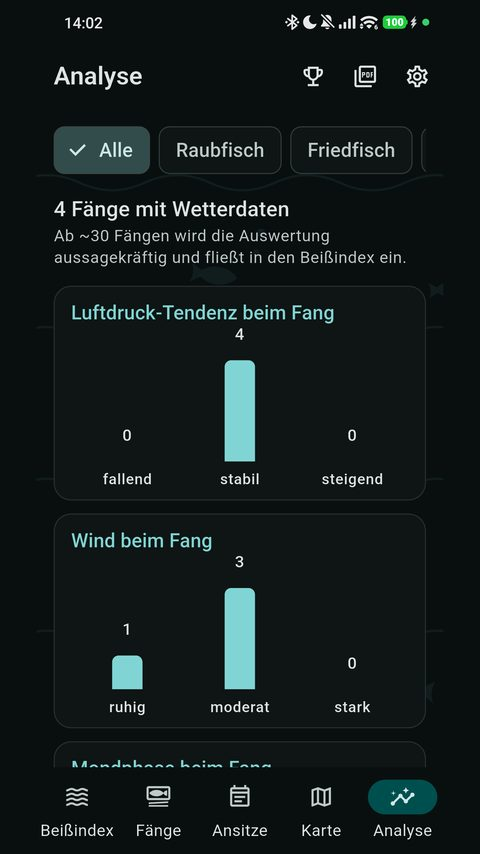

Dein Fangbuch für unterwegs: Fänge, Wetter, Schonzeiten. Offline, ohne Konto.






Fangbuch ersetzt das Papier-Fangbuch. Fang fotografieren, Fischart wählen, fertig – GPS-Position, Gewässer, Wetterlage und Mondphase kommen automatisch dazu. Alles bleibt auf deinem Gerät: kein Konto, keine Cloud, keine Werbung, kein Tracking.
Fänge erfassen, auch mit nassen Händen
- Foto aus Kamera oder Galerie, automatisch komprimiert
- 55 deutsche Süß- und Salzwasserarten vorinstalliert, eigene Arten anlegbar
- Länge, Gewicht, Köder, Methode, Notiz, „zurückgesetzt“
- Fangzeitpunkt frei wählbar – Nachtragen geht jederzeit
- Köderfische im Schnelleintrag mit Stückzahl, getrennt von den Fängen
- Suchen und Filtern nach Art, Gewässer, Status und Zeitraum
Beißindex: lohnt sich der Weg ans Wasser?
Ein Wert von 0 bis 100 für deinen Standort, jetzt. Und zwar nachvollziehbar: Jeder Einflussfaktor steht als Begründung daneben – „Luftdruck fällt +18“, „Dämmerungszeit +15“, „starker Wind −10“. Gerechnet wird aus Luftdruck-Tendenz, Wind, Bewölkung, Niederschlag, Dämmerungsfenster und Mondphase.
Schonzeiten, Maße und Fangbegrenzungen
346 kuratierte Regeln aus den Landesfischereiverordnungen aller 16 Bundesländer, dazu die Gewässerordnungen der Landesanglerverbände. Beim Erfassen warnt die App sofort: Schonzeit, Mindestmaß, Entnahmefenster und Tagesfangbegrenzung – je Art, als geteilte Gruppengrenze und als Gesamtgrenze. Nachschlagen kannst du alles auf der Regeln-Seite.
Gewässer und Karte
Die App erkennt per OpenStreetMap, an welchem Gewässer du stehst, und fragt nach. Jedes Gewässer bekommt einen Steckbrief mit Typ, amtlicher Nummer, Notizen und allen Fängen. Das Gewässerverzeichnis führt sie so, wie sie im Erlaubnisschein stehen. Auf der Karte liegen alle Fangorte als Foto-Pins.
Ansitze
Ansitz starten und stoppen oder als Zeitraum nachtragen – auch ohne Fang. Was du währenddessen fängst, ordnet die App dem Ansitz von selbst zu.
Auswertung und Rekorde
Verteilungen über Druck, Wind, Mond und Tageszeit. Persönliche Rekorde: größter und schwerster Fang, Bestmarken je Art, Erstfang. Die Entnahme-Meldung gibt es als PDF je Fangjahr, nach Gewässer und Art sortiert – zum Ausdrucken oder Weiterschicken.
Fischart per Foto erkennen
Optional schlägt die App die Art zum Fangfoto vor. Das Modell läuft auf dem Gerät – kein Foto verlässt dein Handy, kein Schlüssel, kein Konto. Die Entscheidung bleibt bei dir.
Offline gebaut, nicht offline nachgerüstet
Am Wasser gibt es oft kein Netz. Alle Daten liegen in einer lokalen Datenbank. Wetterdaten, die ohne Verbindung fehlen, holt die App später automatisch nach – auch Tage danach. Deinen kompletten Bestand samt Fotos sicherst du als Datei und spielst ihn auf einem anderen Gerät wieder ein. Ohne Cloud.
Einstellungen
Hell und dunkel, fünf Farbschemata, Deutsch oder Englisch.
Datenschutz
Kein Konto, keine Registrierung, keine Werbung, keine Analyse-SDKs. Standort und Zeitpunkt gehen ausschließlich an Open-Meteo (Wetter) und OpenStreetMap (Gewässer), damit die App ihre Arbeit tun kann. Fotos bleiben auf dem Gerät.
Angaben zu Schonzeiten, Maßen und Fangbegrenzungen ohne Gewähr. Es gilt die Gewässerordnung vor Ort.